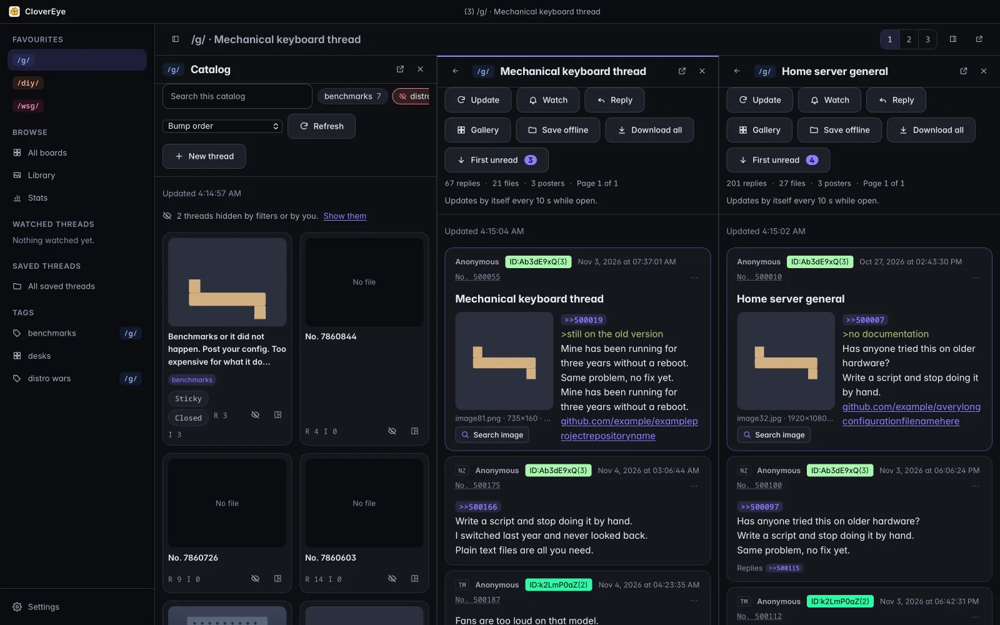
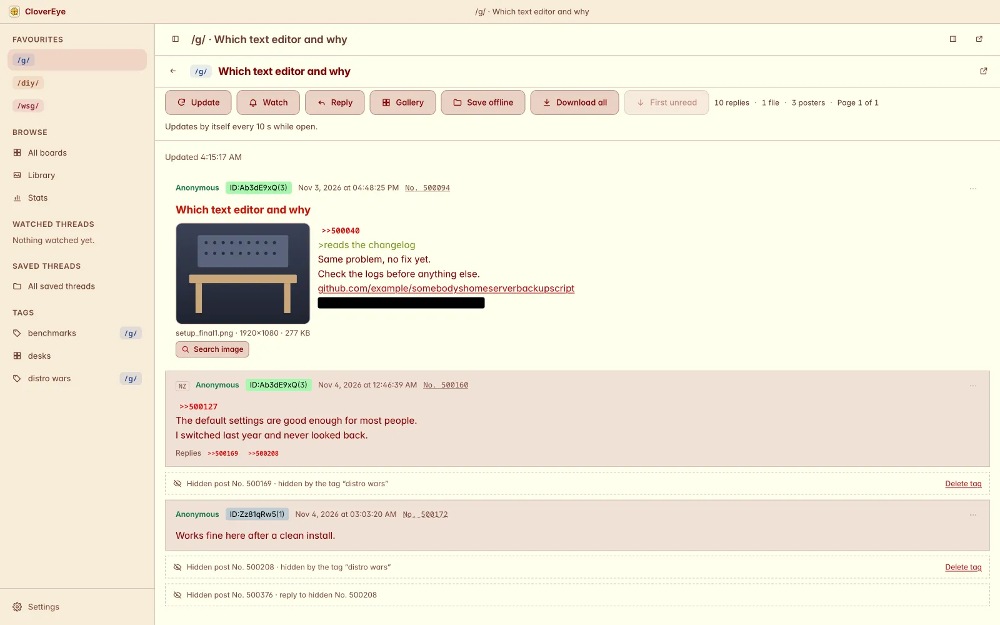
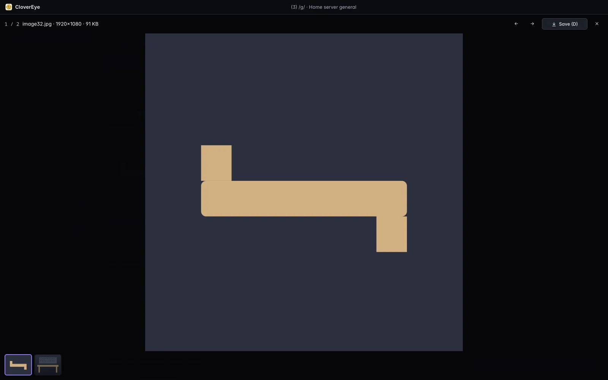
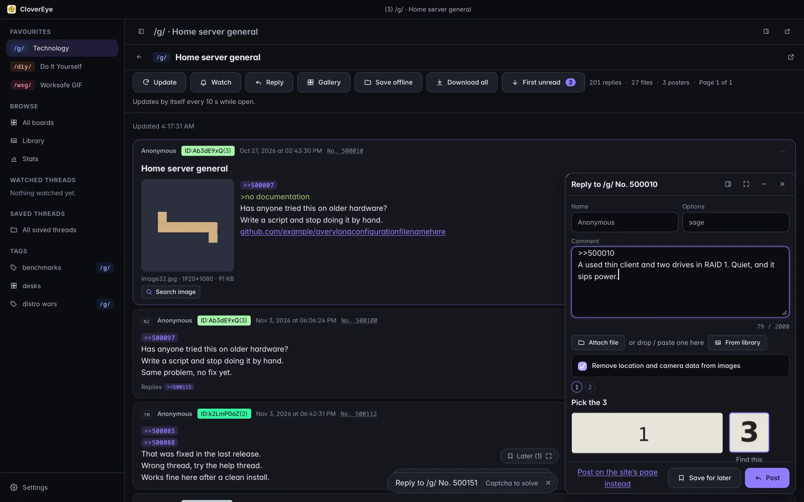
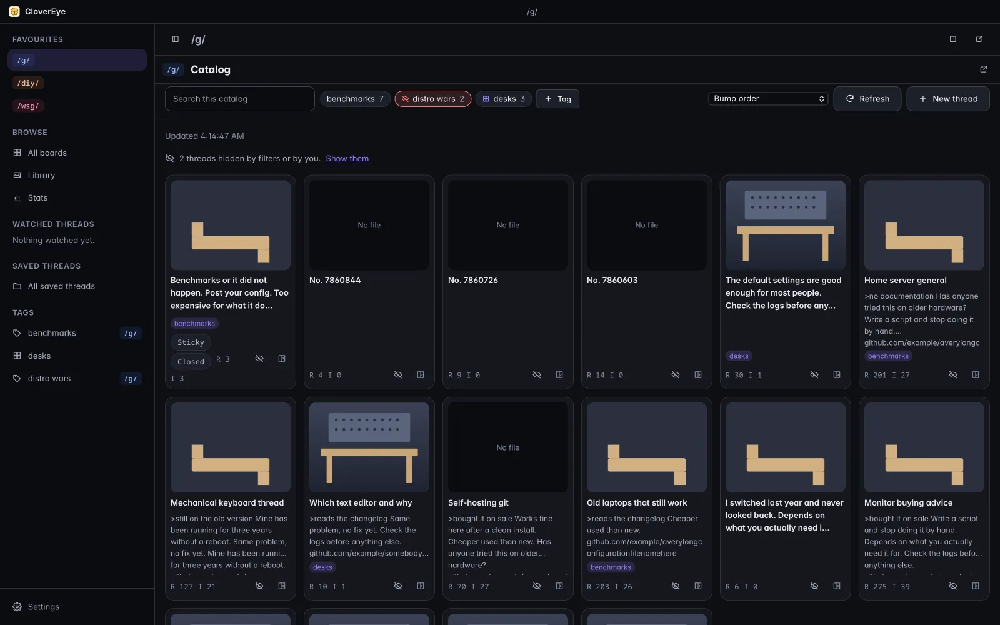
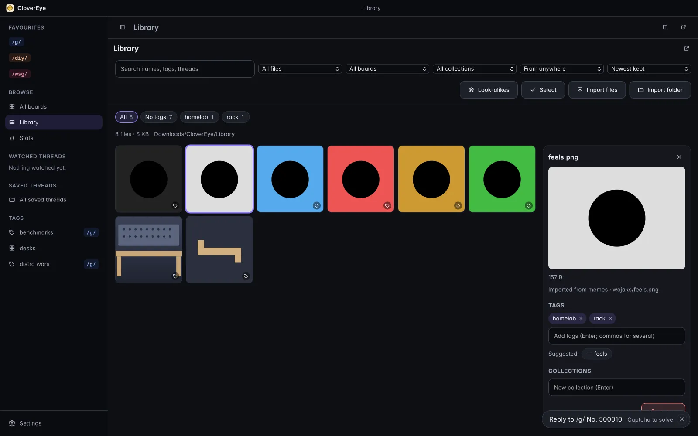
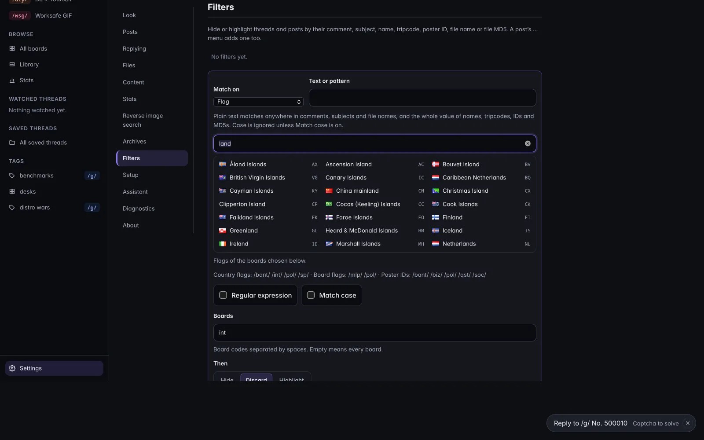
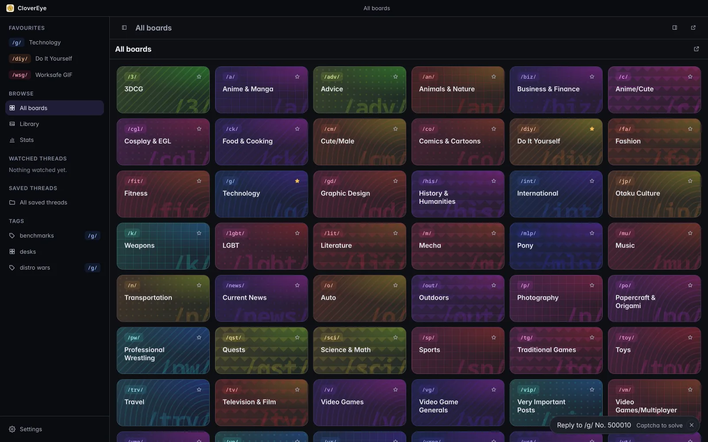

CloverEye
CloverEye is an unofficial desktop client for 4chan: catalogs and threads in a clean, fast window, a thread watcher, and two threads side by side. Free software, made to be polite to the site.
Version 0.1.4 · AGPL-3.0
Every thread with its picture; search, sort, hover a thumbnail for the full file. Quote links, replies under each post, videos that play in place.
Up to five catalogs or threads side by side, in one to three rows; any of them in a window of its own.
Unread counts in the sidebar, replies to you marked, and threads flagged when they die or are archived.
The site’s own captcha, solved in the form. What you write waits as a pill, file and all, until you post it or delete it.
Files you save keep their board, thread and post. Tag them, sort them into collections, find look-alikes, import your own folders.
Next to the search box: show only what a tag finds, or hide it. Words or flags, on one board or all of yours, with stats.
Hide, highlight or discard posts by words, names, IDs, files, capcodes or flags, picked from a list.
A thread’s files one by one, as large as the window allows. Save a thread to read offline, or download all its files.
19 of them, the classic board styles among them; text size and density to taste.
Ask about what you are reading, answered by a model running on your own computer. Off unless you turn it on.
One request a second at most, threads no more often than every 10 seconds, and “has it changed?” before downloading again.
No account, no telemetry, no update checks. Work-unsafe boards stay hidden unless you choose to see them.
Unofficial: not affiliated with or endorsed by 4chan, whose rules apply to everything you read and post. Source code · README · Platform logos: Font Awesome (CC BY 4.0)








Screenshots of CloverEye showing sample posts made up for testing.